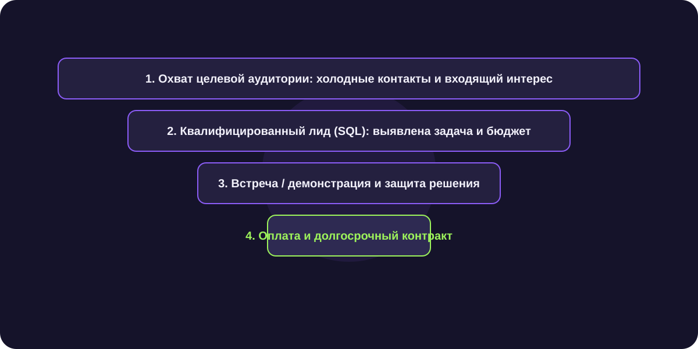

Управление продажами B2B: метрики, регламенты и контроль воронки
Управление продажами B2B представляет собой систему координации команды менеджеров, контроля коммерческих показателей и выстраивания предсказуемого пайплайна поступления выручки в компанию.

Короткий ответ
Управление продажами B2B базируется на контроле трех ключевых блоков: прозрачности пайплайна в CRM, жестких регламентах квалификации лидов и разделении труда между специалистами по первичному выходу (SDR) и ведущими переговорщиками (Closer). Грамотный руководитель управляет не выручкой постфактум, а опережающими метриками активности и конверсией между этапами.
Главные метрики коммерческого директора в B2B
Отслеживание одного лишь объема продаж в конце месяца не позволяет влиять на результат в процессе. Контролируйте опережающие индикаторы:
- Количество новых квалифицированных лидов (SQL): сколько компаний с бюджетом вошло в проработку за неделю.
- Скорость движения сделки (Sales Velocity): среднее количество дней, которое сделка проводит на каждом этапе воронки.
- Конверсия между соседними этапами: какой процент лидов переходит со звонка на презентацию и с презентации на контракт.
- Пайплайн-покрытие (Pipeline Coverage): сумма активных сделок на стадии КП должна в 3–4 раза превышать месячный план по выручке.
Разделение ролей: почему универсальные менеджеры не работают
Заставлять одного человека искать холодные контакты, вести длинные технические переговоры и выставлять счета — главная ошибка управления:
- Лидогенерация (SDR / ИИ-агенты): поиск баз, отправка первых сообщений в Telegram, отсечение спама и назначение встреч.
- Закрытие сделок (Account Executive): проведение демонстраций, защита КП, согласование цен и дожим до контракта.
- Развитие текущих клиентов (Account Manager): онбординг, продление подписок, допродажи дополнительных модулей.
Стандарты ведения CRM и культура follow-up
Сделка без запланированного следующего шага с точной датой должна считаться браком. Руководитель обязан ежедневно проверять отчет по просроченным задачам и зависшим лидам, возвращая менеджеров к системной работе.
Рост продуктивности отдела из 6 менеджеров в 2.1 раза
Внедрив автоматическую предквалификацию лидов через Telegram-бота NextGen, дистрибьютор промышленного оборудования освободил менеджеров от 60 часов рутинных переписок в месяц. Время ответа сократилось до 1 минуты.